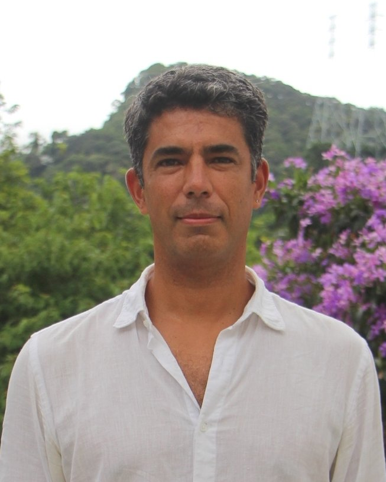

Instituto de Matemática Pura e Aplicada (IMPA)
Estrada Dona Castorina, 110
22460-320, Rio de Janeiro
Brazil
e-mail: alejandro@impa.br
Office: 409
I'm currently an associate professor at IMPA. My mathematical interests include dynamical systems, ergodic theory and low-dimensional geometry and topology. From 2008 until 2023 I served as a professor at Universidade Federal Fluminense.
Curriculum Lattes (Official CNPq CV in Portuguese)
CV (in English, updated on March 2023)